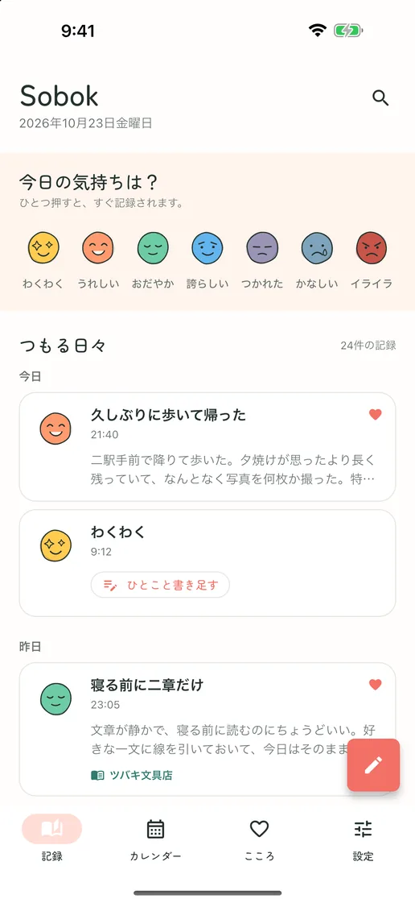
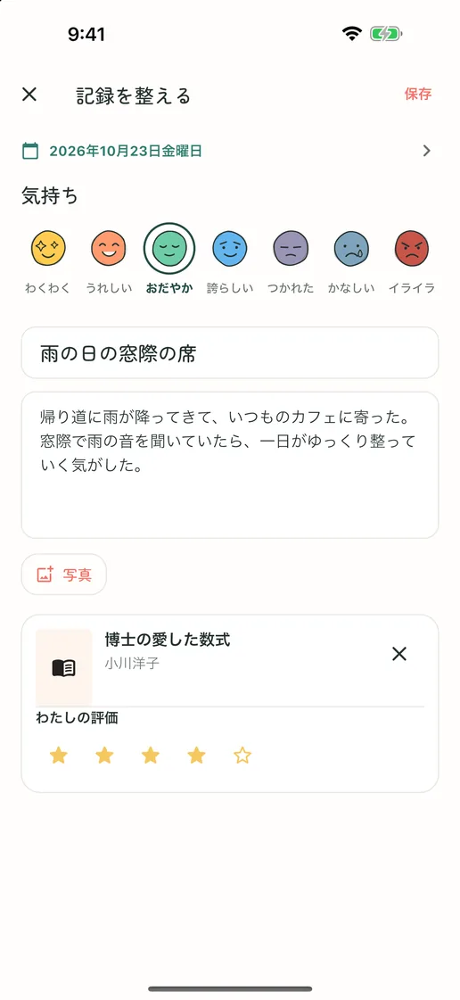
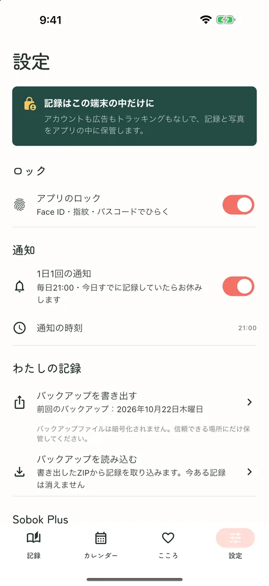
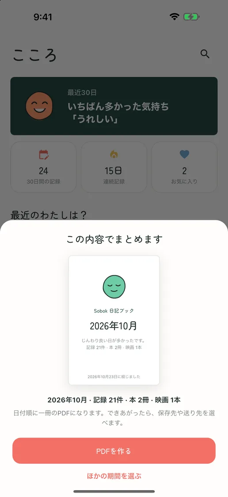
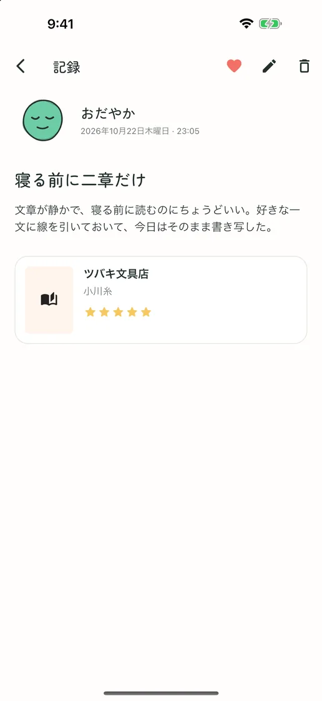
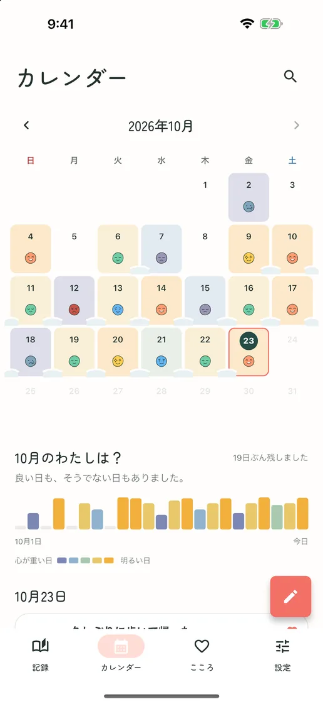
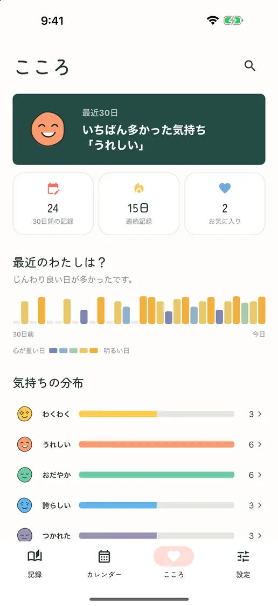

今日の気持ちは、ひと押しで
7つの気持ちの顔からひとつ押せば、それが今日の記録になります。話したいことができたら、その記録にひとこと書き足せます。
気持ちひとつから、本と映画の感想まで
アカウントも、サブスクも、広告もありません。気持ちをひとつ押すだけで今日が残り、長い文章や写真、本・映画の感想までひとつの記録にまとまります。すべてスマホの中だけに保存され、いつでもファイルに書き出せます。
App Store・Google Play で近日公開無料 · アプリ内課金 · iPhone・Android · 한국어 · English · 日本語 · 繁體中文


書きたいぶんだけ
書くことがない日は、気持ちをひとつ押すだけで今日が残ります。書きたい日は、タイトルや長い文章、写真、読んだ本や観た映画の感想までひとつの記録にまとまります。
7つの気持ちの顔からひとつ押せば、それが今日の記録になります。話したいことができたら、その記録にひとこと書き足せます。
タイトル、長い文章、写真、評価まで、その日に残したいぶんだけ。読んだばかりの本や観たばかりの映画を検索して添えられ、見つからなければ手入力もできます。
記録した日ごとに、その日の気持ちがカレンダーに積もり、続けて書いた日は雪のようにつながります。どの週が良くて、どの週がつらかったか、ひと目でわかります。
アプリの画面
「ソボクソボク（소복소복）」は、雪がふんわり降り積もる様子を表す韓国語。毎日がここに、そっと積もっていきます。





会員登録も広告もトラッキングもありません。日記は端末の中だけに保存され、すべての記録と写真をZIPファイルに書き出して、新しい端末で読み込めます。記録・検索・カレンダー・ロック・バックアップはすべて無料。記録をPDFの日記帳にまとめるSobok Plusだけが買い切りです。